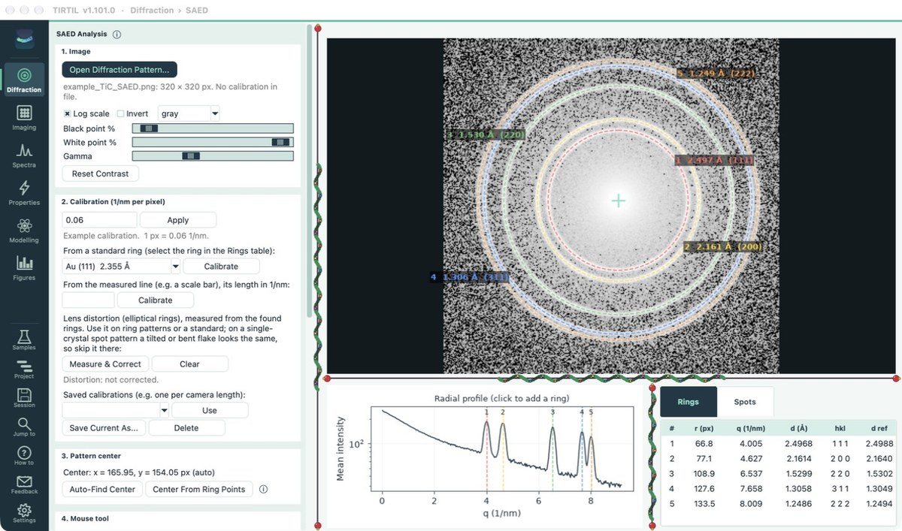

Diffraction
SAED
Ring and spot patterns from the TEM: d-spacings and phases.

Steps
Open Diffraction Pattern...Open a .dm3, .dm4, TIFF or PNG pattern. DM files bring their calibration.CalibrateIf there is no calibration: a known ring (e.g. Au 111) or a measured line gives 1/nm per pixel. Save it for that camera length.Auto-Find CenterFind the center of the pattern, or click points on one ring and use Center From Ring Points.Find Ringsreads the radial profile; each peak in it is one ring radius r.Index Rings & SpotsIndex: d = 1 / (r × calibration), matched to hkl. Fit Lattice Constants gives a (and c), Match All Phases tries every built-in phase.
How it works
Worked example
Calibration 0.06 1/nm per pixel. A ring at r = 77.0 px is 4.62 1/nm, so d = 1 / 4.62 = 0.216 nm = 2.16 Å: TiC (200). With (111), (220) and (311) too, the fit gives a = 4.33 Å.
In TIRTIL: How to (⌘/) › Try It With Example Data loads this example.